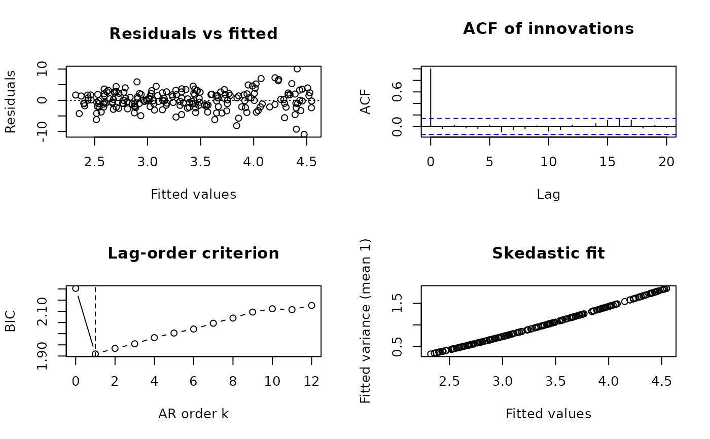

Base-graphics diagnostics: (1) residuals against fitted values; (2) the autocorrelation function of the innovations (the residuals of the final filtered and/or weighted regression, which should look like white noise); (3) the lag-order criterion path with the selected order (serial correction); (4) the fitted variances against the fitted values (heteroskedasticity correction), or a normal quantile plot of the innovations otherwise.
Usage
# S3 method for class 'fgls'
plot(x, which = 1:4, ask = FALSE, lag.max = 20L, ...)Arguments
- x
An
"fgls"object.- which
Panels to draw (subset of 1:4).
- ask
Ask before each new page.
- lag.max
Number of lags of the autocorrelation function.
- ...
Further graphical arguments passed to
plot().
See also
Other fgls:
compare_fgls(),
fgls(),
fgls-methods,
fgls_control(),
lasso_fgls(),
serial_fgls(),
summary.fgls()
Examples
fit <- fgls(y ~ x, data = simulate_combined(200, seed = 1), seed = 1)
plot(fit)
